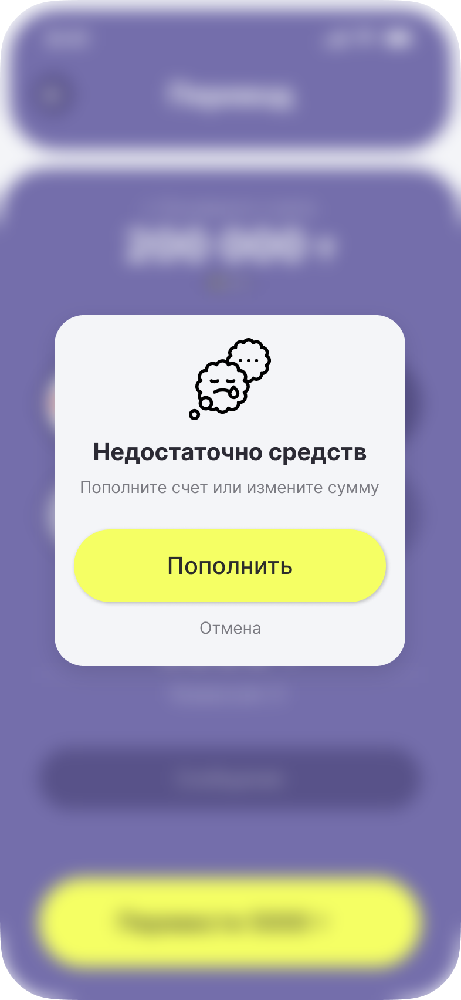
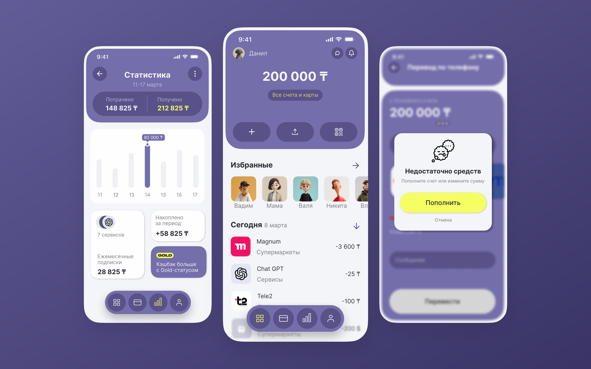

Банковское приложение
Перевод по номеру в три экрана и состояния, в которых пользователь не теряется.
- Платформа
- iOS, 393×852
- Инструменты
- Figma
- Роль
- UX/UI: сценарии, прототип, интерфейс
- Объём
- 15 экранов, карта переходов
Задача
Чтобы перевести деньги, в популярных банковских приложениях нужно пройти 5–7 экранов, а по пути предлагают кредит и страховку. Цель: приложение, где перевод, оплата и статистика доступны быстро и без раздражения.
Отдельная задача — продумать не только идеальный сценарий, но и тупики: нет интернета, не хватает средств, данные грузятся долго.
Ключевые экраны



Главное решение
Проработанные состояния
- Скелетон при загрузке
- Ошибка сети
- Недостаточно средств
Схема переходов

Нажмите на схему, чтобы открыть её крупно. Файл в Figma
Цель и как проверил бы
Цель. перевод по номеру за три экрана без выбора банка
Метрики успеха. доля завершённых переводов, время от открытия до подтверждения, число ошибок на экране суммы
Как проверил бы. юзабилити-тест на 5 пользователях по сценарию «переведи 5 000 ₸ знакомому по номеру», отдельно сценарий с нехваткой средств